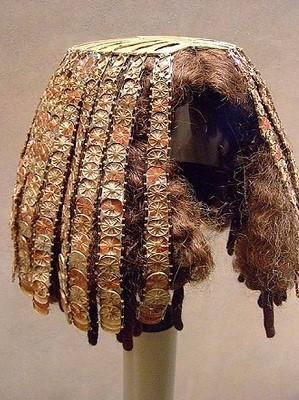
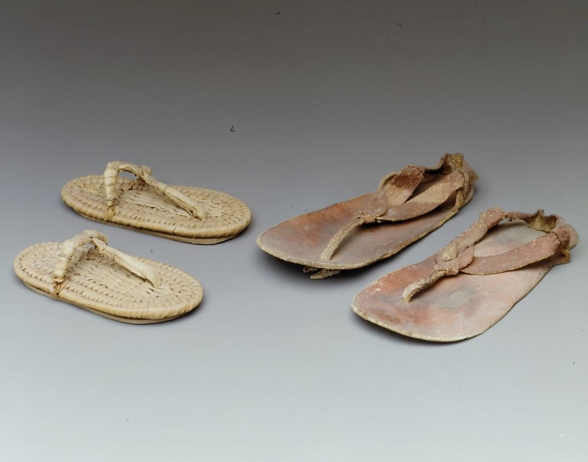
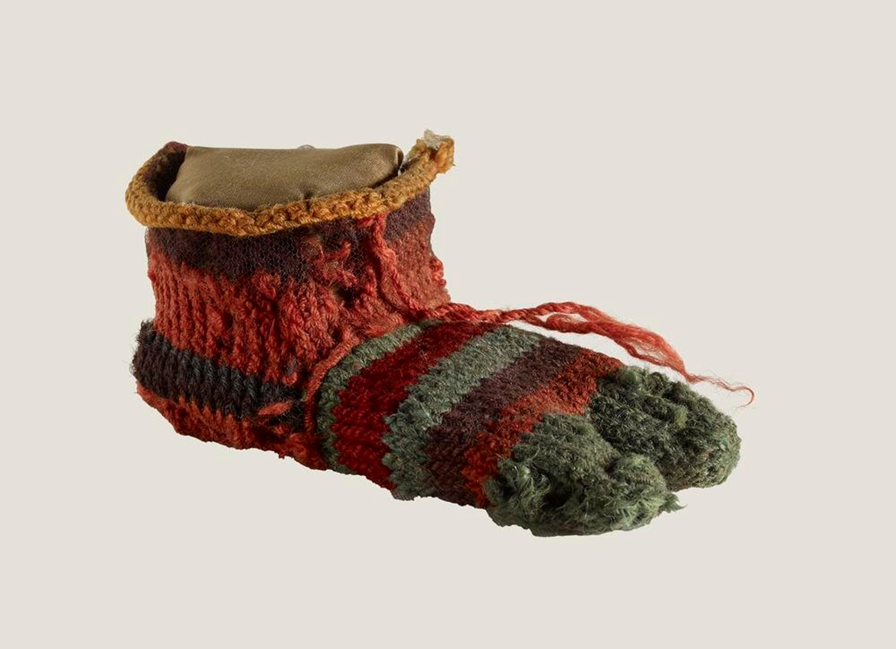

Bộ tóc giả làm bằng vàng, thạch cao, thủy tinh và ngọc bích chôn trong mộ của ba phi tần của pharaoh Thutmose III tại Wadi el-Gabbana Qurud vào khoảng năm 1479 - 1425 trước Công nguyên Là một vật bất li thân của các phụ nữ và kể cả đàn ông tại ai Cập. Họ thường cạo trọc đầu và mang tóc giả. Nó cũng đồng thời thể hiện địa vị và sự giàu có của người mang chúng. Người Ai Cập cổ đại có tình trạng tóc khá là xấu, nên họ đã chế tác và sử dụng các loại dầu thơm như dầu cây thông, dầu hạnh nhân, dầu hương thảo, dầu thầu dầu cho cả tóc giả và tóc thật vì họ tin rằng các loại dầu sẽ kích thích mọc tóc. Người Ai Cập không muốn có tóc màu xám hoặc trắng. Họ sử dụng cây lá móng để nhuộm tóc, nhưng với khí hậu khô tại Ai Cập, tóc giả trở thành giải pháp tốt hơn. Thứ hai, nhiều người nhận thấy sử dụng tóc giả thoải mái hơn so với việc nuôi tóc dài vì vậy tóc giả đã được người Ai Cập cổ đại ưa chuộng. Người Ai Cập đã phát triển kỹ thuật chế tạo tóc giả đến độ hoàn hảo. Những bộ tóc giả đắt nhất dành cho hoàng gia trông hệt như tóc thật. Chúng được làm từ sợi thực vật như vải, lông cừu, các loại lông động vật và tóc người vuốt sáp ong. Tóc giả không chỉ được sử dụng trong cuộc sống hàng ngày của hoàng gia mà cả trong các lễ hội và sự kiện quan trọng. được trang trí bằng đá quý và đồ trang sức. Những người thuộc tầng lớp thượng lưu thích sở hữu nhiều bộ tóc giả để thể hiện địa vị cao quý của họ.
• Dép Hầu hết trẻ em và người lớn đều đi chân trần và không thường xuyên đi giày. Loại giày mà người Ai Cập cổ đại mang là sandal. Giống như đôi dép xỏ ngón bạn mang ngày nay. Người bình thường đi dép rơm. Những người giàu có hơn đi dép da, thường dành cho những dịp đặc biệt. Đây là một hình ảnh cho thấy sự khác biệt. Đôi dép rơm nhỏ bên trái là của trẻ em. Đôi dép bên phải được làm bằng da dành cho người lớn. Vào mùa đông, người Ai Cập mang tất để giữ ấm đôi chân
 